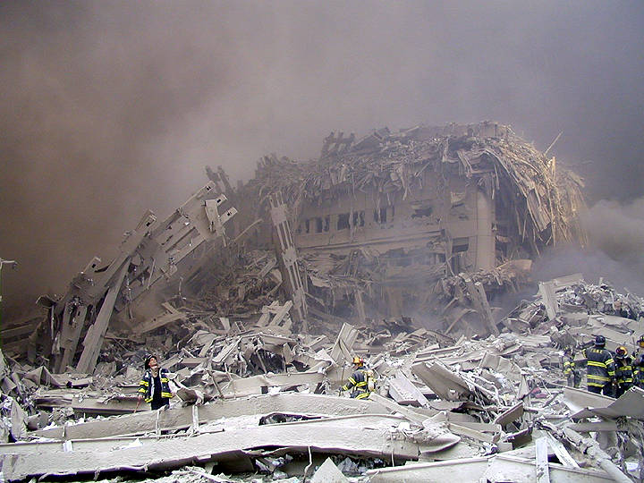

Ces pages contiennent les échanges ayant eu lieu suite aux incompréhensibles évènements du 11 Septembre 2001. Il s'agit de la correspondance par courriel qui a eu lieu dans les jours qui ont suivie. Ce courrier a servi à exprimer notre incrédulité, notre rage, notre tristesse et notre angoisse. J'ai ajouté aux textes d'origine des images prises un peu partout sur le net. Elle sont pour la plupart troublantes sinon insupportables.
Following the 11th of September tragedy we exchanged a lot of e-mail to express our disbelief, our anger, our sadness and our fears. I put all these exchanges on these pages. To the original e-mail I took the liberty to add some images from the web. Most of them are disturbing if not unbearable.
"Les guerres sont comme les feux de
broussailles, si on n'y prend garde, elles se mondialisent."
- Daniel Penac, La fée carabine P.162. -
